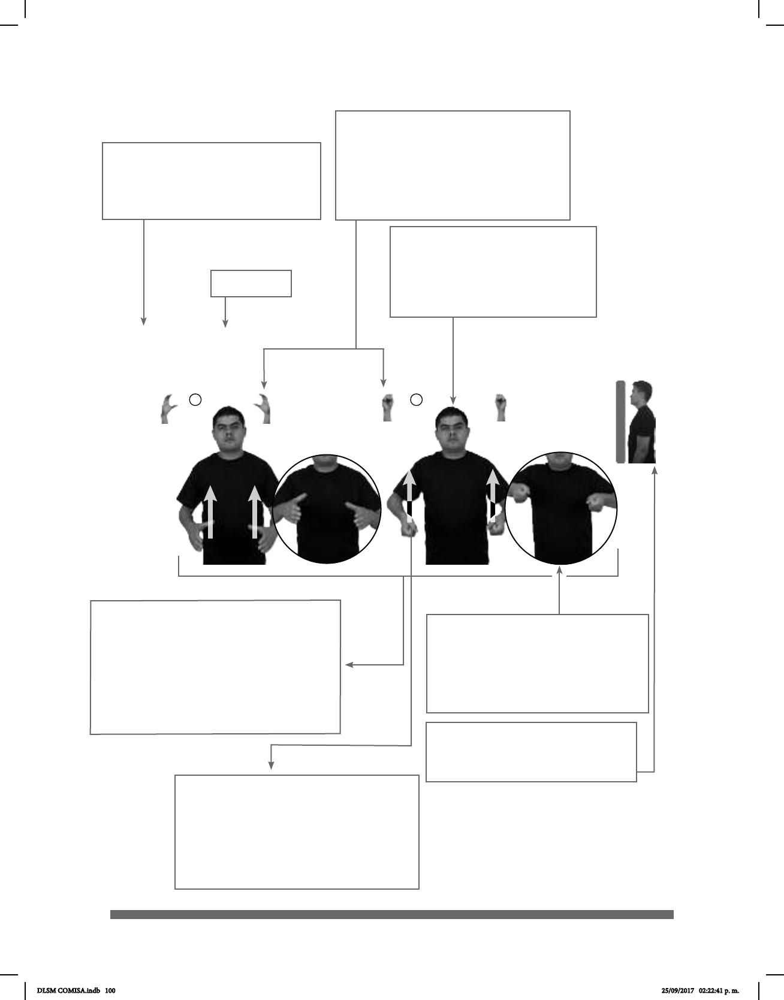

100
III. La imagen principal
representa la vista en que se da
naturalmente el encuentro con el
interlocutor de LSM, es decir, una
vista frontal.
IV. Algunas imágenes auxiliares
se presentan dentro de círculos
para advertir mejor los rasgos dis-
tintivos y las propiedades de las
señas que lo requieren.
VII. Una seña puede estar ilustrada con
más de una imagen. En estas entradas,
aparece una numeración dentro de las
ilustraciones que indica el orden en que
se articula la seña. El orden de lectura
es de arriba hacia abajo y de derecha a
izquierda.
V. Se presenta una vista lateral
para ampliar la perspectiva de
las señas.
VI. Las echas dentro de la ilustra-
ción señalan los movimientos que se
efectúan durante la realización de las
señas. Estas guías aparecen en
color blanco o negro únicamente
para brindar mayor contraste.
II. Entrada
1 2
Cacerola
(C-17)
I. El número de entrada ayuda-
rá a localizar las señas a partir del
índice, donde la palabra en español
aparece listada en orden alfabético.
III. Las manos en los costados
de la imagen principal
muestran claramente las congu-
raciones manuales de cada seña en
sus respectivos momentos de articu-
lación.
DLSM COMISA.indb 100 25/09/2017 02:22:41 p. m.